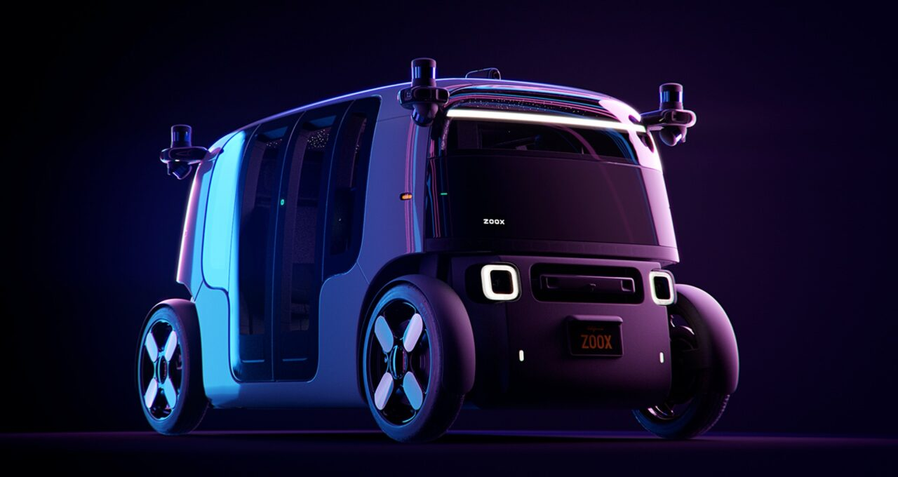
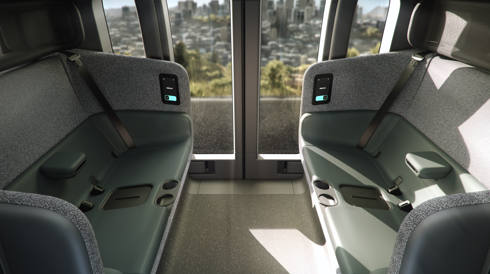

未来のモビリティを考えるとき、個人の駐車場のために多くの土地を整備する必要はなくなるかもしれない。
今週、自律型モビリティ企業のZooxが、待望の目的特化型ロボタクシーを発表した。都市部での日常的な移動を想定して設計されたこの車両はNVIDIAの技術を搭載しており、双方向走行機能を備えたレベル5ロボタクシーの先駆けとして、次世代のインテリジェント交通の具体的な姿を示している。
ZooxとNVIDIAが最初にパートナーシップを発表したのは2017年のことであり、革新的なスタートアップであるZooxはNVIDIAの高性能・省エネコンピュートを活用し、レベル5車両を一から開発してきた。これは自律的な未来へ向けた重要なマイルストーンであった。また、ZooxはNVIDIA Inceptionのアルムナイでもある。NVIDIA Inceptionは、AIとデータサイエンスで産業を変革するスタートアップを支援するアクセラレータープログラムだ。
ロボタクシーは私たちの移動方法を根本から変えようとしている。UBSのアナリストは、これらの車両が2030年までに世界全体で2兆ドル規模の市場を生み出す可能性があり、乗客の日々の交通費を80％以上削減できると試算している。価格が手頃になれば、都市部での自家用車保有が減ると予想されており、6,500人の米国ドライバーを対象にした最近の調査では、ロボタクシーが普及すれば自家用車の所有を手放してもよいと答えた人が約半数に上った。
ZooxとNVIDIA AIテクノロジーのオープン性・スケーラビリティにより、より安全で効率的なモビリティというビジョンは、遠い未来の話ではなく、手の届く現実へと近づいている。
従来の乗用車がドライバーを中心に設計されているのとは異なり、Zooxは乗客のために設計されている。この車両は自律型電気モビリティに必要な機能、たとえばセンサーの配置や大型バッテリーなどを最初から最適化して作られた。
各車両は四輪操舵を備えており、縦列駐車なしに狭い路肩スペースへ寄せることができる。この機能により、Zooxは迅速に路肩へ停車して乗客を乗降させ、交通の流れを妨げずにスムーズな移動体験と安全性を提供できる。
車両は双方向に走行できるため、固定した前部・後部が存在しない。車道への進入・退出はいずれも前進で行え、バックは不要だ。予期しない通行止めに遭遇した場合も、そのまま方向を反転するか、四輪操舵でその場で向きを変えられる。後退の必要は一切ない。
車内では向かい合わせの対面シーティングを採用しており、車両周囲の視界を確保しながら乗客同士のコミュニケーションもしやすい。全席が同じスペースと体験を提供しており、「外れ席」というものが存在しない。対面シーティングにより通路も広く取られており、乗客同士が立ち上がったり身体をよじったりすることなくすれ違える。

こうした設計上の細部が組み合わさり、乗客はシームレスなモビリティの自由を享受できる。さらに、従来の自動車にはない安全技術が随所に盛り込まれている。
NVIDIAは、データセンターから車両までをカバーする集中型アーキテクチャを持つ、ソフトウェア定義型車両開発のためのエンドツーエンドプラットフォームを唯一提供している。
ロボタクシーがレベル5の自律走行を達成するには、新機能や新たな能力を継続的に追加できるだけのコンピュートの余力が必要だ。NVIDIAはこのレベルのパフォーマンスを実現し、トレーニング・検証のためのインフラから車載コンピュートまでをカバーする。
これらの車両はデータセンターで開発・改善されたディープニューラルネットワークを無線通信経由で継続的にアップデートできる。
NVIDIAプラットフォームのオープンかつモジュール型の特性により、ロボタクシー企業はZooxの左右対称レイアウトのような新しいデザインに対応したカスタム構成を作成できる。カメラ、レーダー、LiDARを組み合わせ、車両の四隅で270度の視野角を実現している。
車載センサー数十個からのデータを解析するために必要な数のプロセッサーを使用できるため、開発者はシステムとアルゴリズムの多様性と冗長性によって安全性を確保できる。
NVIDIAを活用することで、Zooxはロボタクシー向けの唯一実証済みの高性能ソリューションを採用し、オンデマンド自律型モビリティのビジョンを現実のものに近づけている。